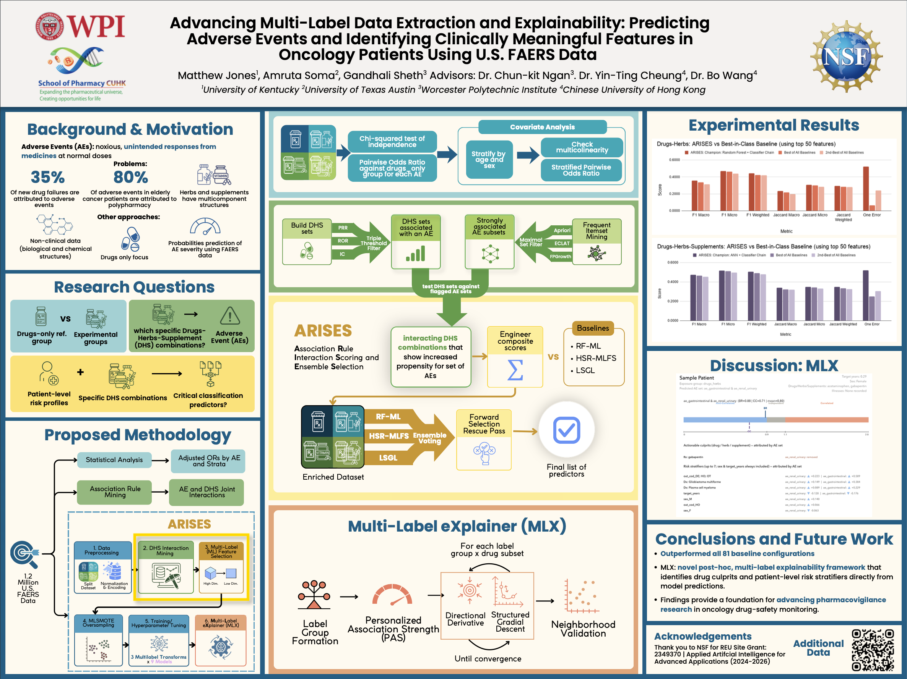

NSF REU · Full-Time · Worcester Polytechnic Institute
AI for Social Good — Adverse Drug Reaction Prediction
Best Showcase Presentation, WPI REU Summer 2026

Ten-week NSF-funded REU mapping drug–drug, drug–herb, and drug–supplement interactions with ML and deep learning. Ran the full research pipeline end to end — problem identification, hypothesis, solution design, execution, and dissemination.
- ARISES — Association Rule Interaction Scoring and Ensemble Selection, a feature-selection method using pharmacovigilance signals to surface correlation patterns other methods miss.
- MLX (Multi-Label eXplainer) — a counterfactual explainability method using structured gradient descent on the classifier's own probability surface. Unlike LIME or SHAP, which explain each adverse event in isolation, MLX accounts for label interdependence — explaining how predicted events interact with one another.
Beat all 81 baselines, 6/7 metrics
+3–5% avg. improvement